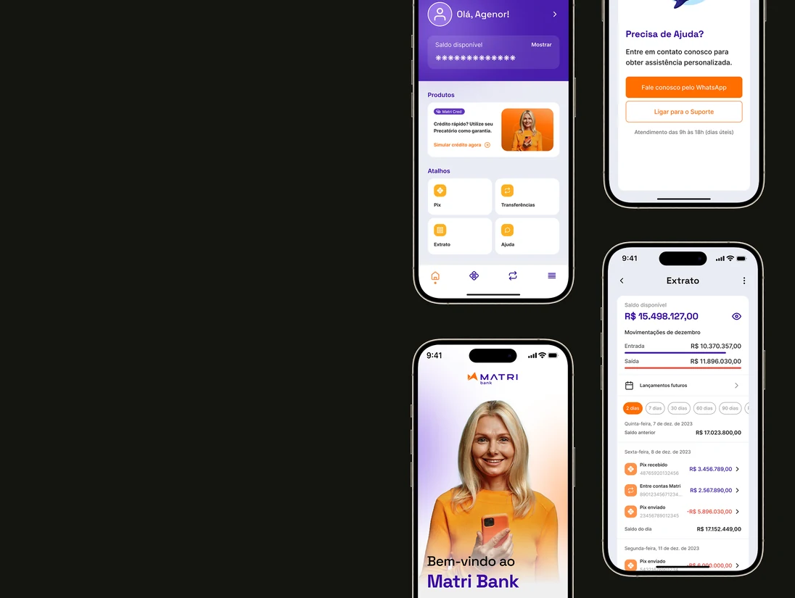
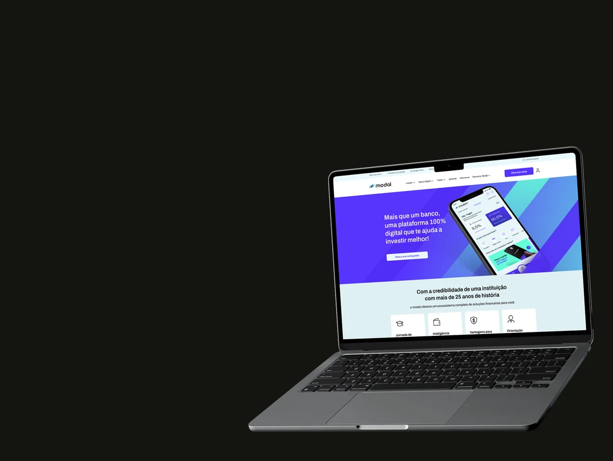

Complex data,
fast decisions.See the work ↓
Hi, I'm Guilherme. I turn complex systems in healthcare, enterprise logistics and consumer trust into decisions people can act on. Today I design for a platform serving 20M+ users a month.
Four products, the system underneath them, and one slot still open.
Healthcare, enterprise logistics and consumer trust are different industries. The job is the same: turn complexity into a decision someone can act on immediately.

Genial App

LIAM

Pick & Pack

Compass

Compra Confiável
Your product here
What I actually do.
Discovery
Stakeholder and user interviews, data analysis, opportunity solution trees and journey mapping. Mostly, finding the constraint that actually moves the metric before anyone opens Figma.
Delivery
Prioritization, roadmaps, high-fidelity prototypes and usability testing, then staying with the engineering squad through build and release instead of handing off a file.
Design Systems
Three built from scratch at three companies: Compass, Matri and Atípico, plus the DesignOps governance that keeps a system coherent after launch.
Mentoring
Workshop facilitation, design critique rituals and mentoring junior and mid-level designers. At Genial Care I later led design across two teams.
Words from people I've built with.
As his design manager at Genial Care, I watched Guilherme's work grow increasingly strategic, always aligned to product and business goals, with a high bar for quality.
Range, under pressure.

Matri Bank
Staff Product Designer on white-label digital banking. Redesigned the credit journey for products backed by court-ordered government payments, taking completion from 18% to 63% — a 45-point gain on the step that decides whether the product exists. Also built the Matri Design System.

Modal Bank
I joined 7COMm as a support intern and left five years later as a Senior UX/UI Designer. When the agency designing Modal's site dropped the project mid-way, I took over the Figma file and shipped it. That work earned the senior title.

10+ years in technology, 6+ of them in product and UX design. I started as a support intern monitoring enterprise systems, moved into development, then into UX. That path is why I default to systems thinking over decoration.
I've designed inside a startup squad shipping an MVP in a month and inside a platform serving 20M+ monthly users, where one flawed decision moves national-scale metrics. Same instinct at either pace: find the real constraint and design around it.
I treat AI as part of my craft, for research, benchmarks and pressure-testing concepts early. I work with LLMs and custom agents day to day, and I build with Claude Code to ship small experiments straight to production, this site among them.